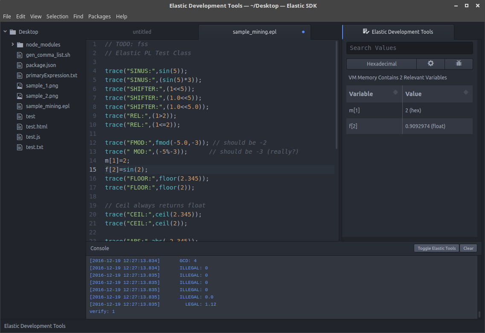

Complete with Editor, ElasticPL Compiler and Virtual Machine.

Just extract, and launch either "./atom" or "atom.exe" (or in the MacOS case, just launch the App)
Note: The ElasticPL language is still under development and will update automatically.
You will be notified whenever that happens. An updater for the Editor itself is not yet finished, so keep in mind: updating may suck!
Also, make sure that you have Java 1.8 installed and the java / java.exe executable is in your path. If you don't do that, everything will fail!